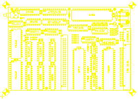
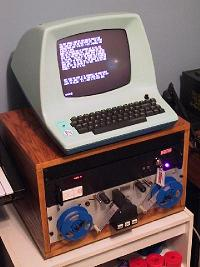
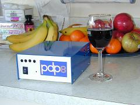
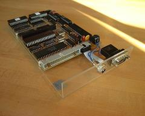

Build Your Own SBC6120
Build Your Own SBC6120


|
|
|
 If you need help obtaining specialized parts such as PC boards, HD6120 CPU chips, programmed GALs or EPROMs, then check the Spare Time Gizmos Orders page for a list of what's currently available.Spare Time Gizmos cannot promise to provide support for the SBC6120, however if you are a hobbyist building one for personal use and need help, then write to us and we'll do what we can. If your organization would like to put the SBC6120 to use in a commercial application, then Spare Time Gizmos would be happy to enter into a consulting contract with you. Please write to us with your needs.
LicensingAll SBC6120 files are Copyright (C) 2001-2003 by Spare Time Gizmos.
 All SBC6120 software and firmware including, but not limited to, BTS6120, PALX, GAL programming, and the VM01/ID01 handlers, are covered under under the terms of the GNU General Public License. Permission is granted to copy, distribute and/or modify these files under the terms of the GNU General Public License as published by the Free Software Foundation, version 2. In general, these licenses will allow you to use the SBC6120 design for any purpose you choose, including to create derivative works of your own. However if you choose to distribute the SBC6120 design or a derivative, then you must make your distribution, including source files, free to anyone. Refer to the GPL FAQ for more information.
Resources
 Other SBC6120 resources are
Here are links to some PDP-8 languages and interpreters which may or may not run on the SBC6120 - please let us know if you get one of them working!

If you've built an SBC6120 and would like it linked here,
send me an email and I'll be happy
to do it. |
Visit these Spare Time Gizmos
|


{kind=link}
{kind=link}
{kind=link}